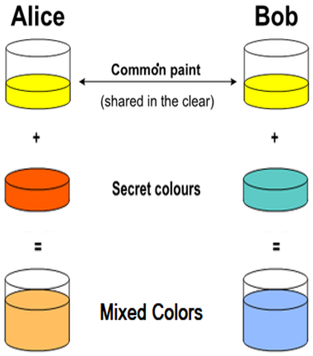
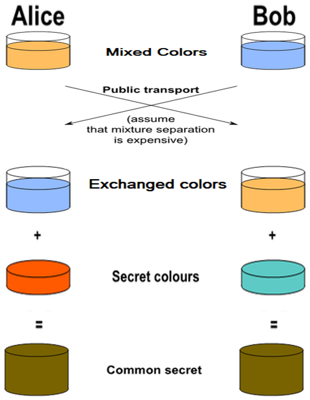
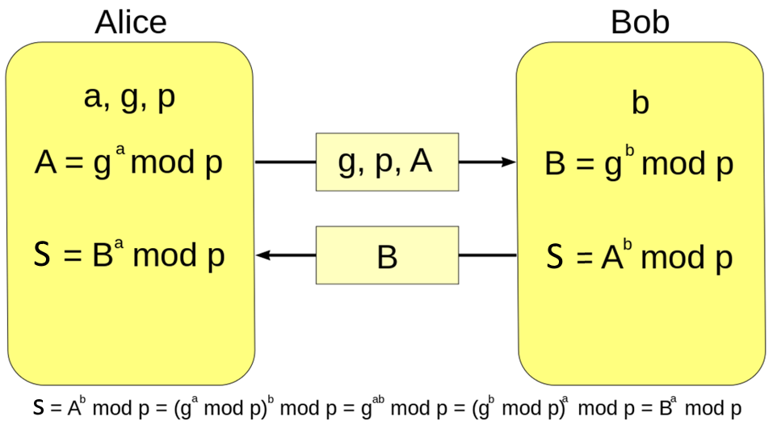
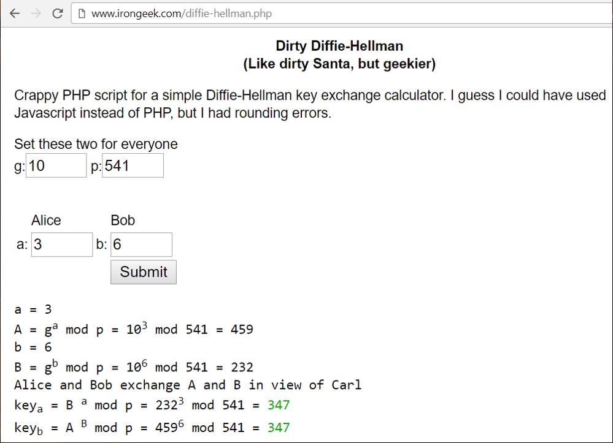

Diffie–Hellman Key Exchange
Diffie–Hellman Key Exchange (DHKE)
Diffie–Hellman Key Exchange (DHKE) is a cryptographic method to securely exchange cryptographic keys (key agreement protocol) over a public (insecure) channel in a way that overheard communication does not reveal the keys. The exchanged keys are used later for encrypted communication (e.g. using a symmetric cipher like AES).
DHKE was one of the first public-key protocols, which allows two parties to exchange data securely, so that is someone sniffs the communication between the parties, the information exchanged can be revealed.
The Diffie–Hellman (DH) method is anonymous key agreement scheme: it allows two parties that have no prior knowledge of each other to jointly establish a shared secret key over an insecure channel.
Note that the DHKE method is resistant to sniffing attacks (data interception), but it is vulnerable to man-in-the-middle attacks (attacker secretly relays and possibly alters the communication between two parties).
The Diffie–Hellman Key Exchange protocol can be implemented using discrete logarithms (the classical DHKE algorithm) or using elliptic-curve cryptography (the ECDH algorithm).
Key Exchange by Mixing Colors
The Diffie–Hellman Key Exchange protocol is very similar to the concept of "key exchanging by mixing colors", which has a good visual representation, which simplifies its understanding. This is why we shall first explain how to exchange a secret color by color mixing.
The design of color mixing key exchange scheme assumes that if we have two liquids of different colors, we can easily mix the colors and obtain a new color, but the reverse operation is almost impossible: no way to separate the mixed colors back to their original color components.
This is the color exchange scenario, step by step:
- Alice and Bob, agree on an arbitrary starting (shared) color that does not need to be kept secret (e.g. yellow).
- Alice and Bob separately select a secret color that they keep to themselves (e.g. red and sea green).
- Finally Alice and Bob mix their secret color together with their mutually shared color. The obtained mixed colors area ready for public exchange (in our case orange and light sky blue).

The next steps in the color exchanging scenario are as follows:
- Alice and Bob publicly exchange their two mixed colors.
- We assume that there is no efficient way to extract (separate) the secret color from the mixed color, so third parties who know the mixed colors cannot reveal the secret colors.
- Finally, Alice and Bob mix together the color they received from the partner with their own secret color.
- The result is the final color mixture (yellow-brown) which is identical to the partner's color mixture.
- It is the securely exchanged shared key.

If a third parties have intercepted the color exchanging process, it would be computationally difficult for them to determine the secret colors.
The Diffie-Hellman Key Exchange protocol is based on similar concept, but uses discrete logarithms and modular exponentiations instead of color mixing.
The Diffie-Hellman Key Exchange (DHKE) Protocol
Now, let's explain how the DHKE protocol works.
The Math behind DHKE
DHKE is based on a simple property of modular exponentiations:
(ga)b mod p = (gb)a mod p
where g, a, b and p are positive integers.
If we have A = ga mod p and B = gb mod p, we can calculate gab mod p, without revealing a or b (which are called secret exponents).
In computing theory, these is no efficient algorithm which can find a secret exponent. If we have m, g and p from the below equation:
m = gs mod p
there is no efficient (fast) algorithm to find the secret exponent s. This is known as the Discrete Logartihm Problem (DLP)).
Discrete Logarithm Problem (DLP)
The Discrete Logarithm Problem (DLP) in computer science is defined as follows:
- By given element b and value a = bx find the exponent x (if it exists)
The exponent x is called discrete logarithm, i.e. x = logb(a). The elements a and b can be simple integers modulo p (from the group ℤ/pℤ) or elements of finite cyclic multiplicative group G (modulo p), where p is typically a prime number.
In cryptography, many algorithms rely on the computational difficulty of the DLP problem over carefully chosen group, for which no efficient algorithm exists.
The DHKE Protocol
Now, after we are familiar with the above mathematical properties of the modular exponentiations, we are ready to explain the DHKE protocol. This is how it works:

Let's explain each step of this key-exchange process:
- Alice and Bob agree to use two public integers: modulus p and base g (where p is prime, and g is a primitive root modulo p).
- For example, let p = 23 and g = 5.
- The integers g and p are public, typically hard-coded constants in the source code.
- Alice chooses a secret integer a (e.g. a = 4), then calculates and sends to Bob the number A = ga mod p.
- The number A is public. It is sent over the public channel and its interception cannot reveal the secret exponent a.
- In our case we have: A = 54 mod 23 = 4.
- Bob chooses a secret integer b (e.g. b = 3), then calculates and sends to Alice the number B = gb mod p.
- In our case we have: B = 53 mod 23 = 10
- Alice computes s = Ba mod p
- In our example: s = 104 mod 23 = 18
- Bob computes s = Ab mod p
- In our example: s = 43 mod 23 = 18
- Alice and Bob now share a secret number s
- s = Ab mod p = Ba mod p = (ga)b mod p = (gb)a mod p = gab mod p = 18
- The shared secret key s cannot be computed from the publicly available numbers A and B, because the secret exponents a and b cannot be efficiently calculated.
In the most common implementation of DHKE (following the RFC 3526) the base is g = 2 and the modulus p is a large prime number (1536 ... 8192 bits).
Security of the DHKE Protocol
The DHKE protocol is based on the practical difficulty of the Diffie–Hellman problem, which is a variant of the well known in the computer science DLP (discrete logarithm problem)), for which no efficient algorithm still exists.
DHKE exchanges a non-secret sequence of integer numbers over insecure, public (sniffable) channel (such as signal going through a cable or propagated by waves in the air), but does not reveal the secretly-exchanged shared private key.
Again, be warned that DHKE protocol in its classical form is vulnerable to man-in-the-middle attacks, where a hacker can intercept and modify the messages exchanged between the parties.
Finally, note that the integers g, p, a and p are typically very big numbers (1024, 2048 or 4096 bits or even bigger) and this makes the brute-force attacks non-sense.
DHKE - Live Example
As live example, you can play with this online DHKE tool: http://www.irongeek.com/diffie-hellman.php

ECDH - Elliptic Curves-based Diffie-Hellman Key Exchange Protocol
The Elliptic-Curve Diffie–Hellman (ECDH) is an anonymous key agreement protocol that allows two parties, each having an elliptic-curve public–private key pair, to establish a shared secret over an insecure channel.
ECDH is a variant of the classical DHKE protocol, where the modular exponentiation calculations are replaced with elliptic-curve calculations for improved security. We shall explain in details the elliptic-curve cryptography (ECC) section later.